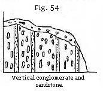
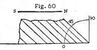
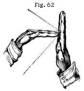
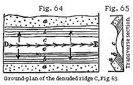
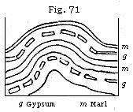
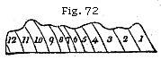

The Student’s Elements of Geology
Why the Position of Marine Strata, above the Level of the Sea, should be referred to the rising up of the Land, not to the going down of the Sea. — Strata of Deep-sea and Shallow-water Origin alternate. — Also Marine and Fresh-water Beds and old Land Surfaces. — Vertical, inclined, and folded Strata. — Anticlinal and Synclinal Curves. — Theories to explain Lateral Movements. — Creeps in Coal-mines. — Dip and Strike. — Structure of the Jura. — Various Forms of Outcrop. — Synclinal Strata forming Ridges. — Connection of Fracture and Flexure of Rocks. — Inverted Strata. — Faults described. — Superficial Signs of the same obliterated by Denudation. — Great Faults the Result of repeated Movements. — Arrangement and Direction of parallel Folds of Strata. — Unconformability. — Overlapping Strata.
Land has been raised, not the Sea lowered.—It has been already stated that the aqueous rocks containing marine fossils extend over wide continental tracts, and are seen in mountain chains rising to great heights above the level of the sea (p. 29). Hence it follows, that what is now dry land was once under water. But if we admit this conclusion, we must imagine, either that there has been a general lowering of the waters of the ocean, or that the solid rocks, once covered by water, have been raised up bodily out of the sea, and have thus become dry land. The earlier geologists, finding themselves reduced to this alternative, embraced the former opinion, assuming that the ocean was originally universal, and had gradually sunk down to its actual level, so that the present islands and continents were left dry. It seemed to them far easier to conceive that the water had gone down, than that solid land had risen upward into its present position. It was, however, impossible to invent any satisfactory hypothesis to explain the disappearance of so enormous a body of water throughout the globe, it being necessary to infer that the ocean had once stood at whatever height marine shells might be detected. It moreover appeared clear, as the science of geology advanced, that certain spaces on the globe had been alternately sea, then land, then estuary, then sea again, and, lastly, once more habitable land, having remained in each of these states for considerable periods. In order to account for such phenomena
without admitting any movement of the land itself, we are required to imagine several retreats and returns of the ocean; and even then our theory applies merely to cases where the marine strata composing the dry land are horizontal, leaving unexplained those more common instances where strata are inclined, curved, or placed on their edges, and evidently not in the position in which they were first deposited.
Geologists, therefore, were at last compelled to have recourse to the doctrine that the solid land has been repeatedly moved upward or downward, so as permanently to change its position relatively to the sea. There are several distinct grounds for preferring this conclusion. First, it will account equally for the position of those elevated masses of marine origin in which the stratification remains horizontal, and for those in which the strata are disturbed, broken, inclined, or vertical. Secondly, it is consistent with human experience that land should rise gradually in some places and be depressed in others. Such changes have actually occurred in our own days, and are now in progress, having been accompanied in some cases by violent convulsions, while in others they have proceeded so insensibly as to have been ascertainable only by the most careful scientific observations, made at considerable intervals of time. On the other hand, there is no evidence from human experience of a rising or lowering of the sea’s level in any region, and the ocean can not be raised or depressed in one place without its level being changed all over the globe.
These preliminary remarks will prepare the reader to understand the great theoretical interest attached to all facts connected with the position of strata, whether horizontal or inclined, curved or vertical.
Now the first and most simple appearance is where strata of marine origin occur above the level of the sea in horizontal position. Such are the strata which we meet with in the south of Sicily, filled with shells for the most part of the same species as those now living in the Mediterranean. Some of these rocks rise to the height of more than 2000 feet above the sea. Other mountain masses might be mentioned, composed of horizontal strata of high antiquity, which contain fossil remains of animals wholly dissimilar from any now known to exist. In the south of Sweden, for example, near Lake Wener, the beds of some of the oldest fossiliferous deposits, called Silurian and Cambrian by geologists, occur in as level a position as if they had recently formed part of the delta of a great river, and been left dry
on the retiring of the annual floods. Aqueous rocks of equal antiquity extend for hundreds of miles over the lake-district of North America, and exhibit in like manner a stratification nearly undisturbed. The Table Mountain at the Cape of Good Hope is another example of highly elevated yet perfectly horizontal strata, no less than 3500 feet in thickness, and consisting of sandstone of very ancient date.
Instead of imagining that such fossiliferous rocks were always at their present level, and that the sea was once high enough to cover them, we suppose them to have constituted the ancient bed of the ocean, and to have been afterwards uplifted to their present height. This idea, however startling it may at first appear, is quite in accordance, as before stated, with the analogy of changes now going on in certain regions of the globe. Thus, in parts of Sweden, and the shores and islands of the Gulf of Bothnia, proofs have been obtained that the land is experiencing, and has experienced for centuries, a slow upheaving movement.*
It appears from the observations of Mr. Darwin and others, that very extensive regions of the continent of South America have been undergoing slow and gradual upheaval, by which the level plains of Patagonia, covered with recent marine shells, and the Pampas of Buenos Ayres, have been raised above the level of the sea. On the other hand, the gradual sinking of the west coast of Greenland, for the space of more than 600 miles from north to south, during the last four centuries, has been established by the observations of a Danish naturalist, Dr. Pingel. And while these proofs of continental elevation and subsidence, by slow and insensible movements, have been recently brought to light, the evidence has been daily strengthened of continued changes of level effected by violent convulsions in countries where earthquakes are frequent. There the rocks are rent from time to time, and heaved up or thrown down several feet at once, and disturbed in such a manner as to show how entirely the original position of strata may be modified in the course of centuries.
Mr. Darwin has also inferred that, in those seas where circular coral islands and barrier reefs abound, there is a slow and continued sinking of the submarine mountains on which the masses of coral are based; while there are other areas of the South Sea where the land is on the rise, and where coral has been upheaved far above the sea-level.
Alternations of Marine and Fresh-water Strata.—It has been shown in the third chapter that there is such a difference
* See "Principles of Geology," 1867, p. 314.
between land, fresh-water, and marine fossils as to enable the geologist to determine whether particular groups of strata were formed at the bottom of the ocean or in estuaries, rivers, or lakes. If surprise was at first created by the discovery of marine corals and shells at the height of several miles above the sea-level, the imagination was afterwards not less startled by observing that in the successive strata composing the earth’s crust, especially if their total thickness amounted to thousands of feet, they comprised in some parts formations of shallow-sea as well as of deep-sea origin; also beds of brackish or even of purely fresh-water formation, as well as vegetable matter or coal accumulated on ancient land. In these cases we as frequently find fresh-water beds below a marine set or shallow-water under those of deep-sea origin as the reverse. Thus, if we bore an artesian well below London, we pass through a marine clay, and there reach, at the depth of several hundred feet, a shallow-water and fluviatile sand, beneath which comes the white chalk originally formed in a deep sea. Or if we bore vertically through the chalk of the North Downs, we come, after traversing marine chalky strata, upon a fresh-water formation many hundreds of feet thick, called the Wealden, such as is seen in Kent and Surrey, which is known in its turn to rest on purely marine beds. In like manner, in various parts of Great Britain we sink vertical shafts through marine deposits of great thickness, and come upon coal which was formed by the growth of plants on an ancient land-surface sometimes hundreds of square miles in extent.
Vertical, Inclined, and Curved Strata.—It has been stated that marine strata of different ages are sometimes found at a considerable height above the sea, yet retaining their original horizontality; but this state of things is quite exceptional. As a general rule, strata are inclined or bent in such a manner as to imply that their original position has been altered.
The most unequivocal evidence of such a change is afforded by their standing up vertically, showing their edges, which is by no means a rare phenomenon, especially in mountainous countries. Thus we find in Scotland, on the southern skirts of the Grampians, beds of pudding-stone alternating with thin layers of fine sand, all placed vertically to the horizon. When Saussure first observed certain conglomerates in a
similar position in the Swiss Alps, he remarked that the pebbles, being for the most part of an oval shape, had their longer axes parallel to the planes of stratification (see Fig. 54 on preceding page). From this he inferred that such strata must, at first, have been horizontal, each oval pebble having settled at the bottom of the water, with its flatter side parallel to the horizon, for the same reason that an egg will not stand on either end if unsupported. Some few, indeed, of the rounded stones in a conglomerate occasionally afford an exception to the above rule, for the same reason that in a river’s bed, or on a shingle beach, some pebbles rest on their ends or edges; these having been shoved against or between other stones by a wave or current, so as to assume this position.
Anticlinal and Synclinal Curves.—Vertical strata, when they can be traced continuously upward or downward for some depth, are almost invariably seen to be parts of great curves, which may have a diameter of a few yards, or of several miles. I shall first describe two curves of considerable regularity, which occur in Forfarshire, extending over a country twenty miles in breadth, from the foot of the Grampians to the sea near Arbroath.
The mass of strata here shown may be 2000 feet in thickness, consisting of red and white sandstone, and various coloured shales, the beds being distinguishable into four principal groups, namely, No. 1, red marl or shale; No. 2, red sandstone, used for building; No. 3, conglomerate; and No. 4, grey paving-stone, and tile-stone, with green and reddish shale, containing peculiar organic remains. A glance at the
section will show that each of the formations 2, 3, 4 are repeated thrice at the surface, twice with a southerly, and once with a northerly inclination or dip, and the beds in No. 1, which are nearly horizontal, are still brought up twice by a slight curvature to the surface, once on each side of A. Beginning at the north-west extremity, the tile-stones and conglomerates, No. 4 and No. 3, are vertical, and they generally form a ridge parallel to the southern skirts of the Grampians. The superior strata, Nos. 2 and 1, become less and less inclined on descending to the valley of Strathmore, where the strata, having a concave bend, are said by geologists to lie in a “ trough" or “ basin." Through the centre of this valley runs an imaginary line A, called technically a “ synclinal line," where the beds, which are tilted in opposite directions, may be supposed to meet. It is most important for the observer to mark such lines, for he will perceive by the diagram that, in travelling from the north to the centre of the basin, he is always passing from older to newer beds; whereas, after crossing the line A, and pursuing his course in the same southerly direction, he is continually leaving the newer, and advancing upon older strata. All the deposits which he had before examined begin then to recur in reversed order, until he arrives at the central axis of the Sidlaw hills, where the strata are seen to form an arch, or saddle, having an anticlinal line, B, in the centre. On passing this line, and continuing towards the S.E., the formations 4, 3, and 2, are again repeated, in the same relative order of superposition, but with a southerly dip. At Whiteness (see Fig. 55) it will be seen that the inclined strata are covered by a newer deposit, a, in horizontal beds. These are composed of red conglomerate and sand, and are newer than any of the groups, 1, 2, 3, 4, before described, and rest unconformably upon strata of the sandstone group, No. 2.
An example of curved strata, in which the bends or convolutions of the rock are sharper and far more numerous within an equal space, has been well described by Sir James Hall.* It occurs near St. Abb’s Head, on the east coast of Scotland, where the rocks consist principally of a bluish slate, having frequently a ripple-marked surface. The undulations of the beds reach from the top to the bottom of cliffs from 200 to 300 feet in height, and there are sixteen distinct bendings in the course of about six miles, the curvatures being alternately concave and convex upward.
Folding by Lateral Movement.—An experiment was made by Sir James Hall, with a view of illustrating the manner in
* Edin. Trans., vol. vii, pl. 3.
which such strata, assuming them to have been originally horizontal, may have been forced into their present position. A set of layers of clay were placed under a weight, and their opposite ends pressed towards each other with such force as to cause them to approach more nearly together. On the removal of the weight, the layers of clay were found to be curved and folded, so as to bear a miniature resemblance to the strata in the cliffs. We must, however, bear in mind that in the natural section or sea-cliff we only see the foldings imperfectly, one part being invisible beneath the sea, and the other, or upper portion, being supposed to have been carried away by denudation, or that action of water which will be explained in the next chapter. The dark lines in the plan (Fig. 57) represent what is actually seen of the strata in the line of cliff alluded to; the fainter lines, that portion which is concealed beneath the sea-level, as also that which is supposed to have once existed above the present surface.
We may still more easily illustrate the effects which a lateral thrust might produce on flexible strata, by placing several pieces of differently coloured cloths upon a table, and when they are spread out horizontally, cover them with a book. Then apply other books to each end, and force them towards each other. The folding of the cloths (see Fig. 58) will imitate those of the bent strata; the incumbent book being slightly lifted up, and no longer touching the two volumes on which it rested before, because it is supported by the tops of the anticlinal ridges formed by the curved cloths. In like manner there can be no doubt that the squeezed strata, although laterally condensed and more closely packed, are yet elongated and made to rise upward, in a direction perpendicular to the pressure.
Whether the analogous flexures in stratified rocks have really been due to similar sideway movements is a question which we can not decide by reference to our own observation. Our inability to explain the nature of the process is, perhaps, not simply owing to the inaccessibility of the subterranean regions where the mechanical force is exerted, but to the extreme slowness of the movement. The changes may sometimes be due to variation in the temperature of mountain masses of rock causing them, while still solid, to expand or contract; or melting them, and then again cooling them and allowing them to crystallise. If such be the case, we have scarcely more reason to expect to witness the operation of the process within the limited periods of our scientific observation than to see the swelling of the roots of a tree, by which, in the course of years, a wall of solid masonry may be lifted up, rent or thrown down. In both instances the force may be irresistible, but though adequate, it need not be visible by us, provided the time required for its development be very great. The lateral pressure arising from the unequal expansion of rocks by heat may cause one mass lying in the same horizontal plane gradually to occupy
a larger space, so as to press upon another rock, which, if flexible, may be squeezed into a bent and folded form. It will also appear, when the volcanic and granitic rocks are described, that some of them have, when melted in the interior of the earth’s crust, been injected forcibly into fissures, and after the solidification of such intruded matter, other sets of rents, crossing the first, have been formed and in their turn filled by melted rock. Such repeated injections imply a stretching, and often upheaval, of the whole mass.
We also know, especially by the study of regions liable to earthquakes, that there are causes at work in the interior of the earth capable of producing a sinking in of the ground, sometimes very local, but often extending over a wide area. The continuance of such a downward movement, especially if partial and confined to linear areas, may produce regular folds in the strata.
Creeps in Coal-mines.—The “creeps,” as they are called in coal-mines, afford an excellent illustration of this fact.--First, it may be stated generally, that the excavation of coal at a considerable depth causes the mass of overlying strata to sink down bodily, even when props are left to support the roof of the mine. “In Yorkshire,” says Mr. Buddle, “three distinct subsidences were perceptible at the surface, after the clearing out of three seams of coal below, and innumerable vertical cracks were caused in the incumbent mass of sandstone and shale which thus settled down.”* The exact amount of depression in these cases can only be accurately measured where water accumulates on the surface, or a railway traverses a coal-field.
When a bed of coal is worked out, pillars or rectangular masses of coal are left at intervals as props to support the roof, and protect the colliers. Thus in Fig. 59, representing a section at Wallsend, Newcastle, the galleries which have been excavated are represented by the white spaces a, b, while the adjoining dark portions are parts of the original coal seam left as props, beds of sandy clay or shale constituting the floor of the mine. When the props have been reduced in size, they are pressed down by the weight of overlying rocks (no less than 630 feet thick) upon the shale below, which is thereby squeezed and forced up into the open spaces.
Now it might have been expected that, instead of the floor rising up, the ceiling would sink down, and this effect, called a “thrust,” does, in fact, take place where the pavement is more solid than the roof. But it usually happens, in coal-
* Proceedings of Geol. Soc., vol. iii, p. 148.
mines, that the roof is composed of hard shale, or occasionally of sandstone, more unyielding than the foundation, which often consists of clay. Even where the argillaceous substrata are hard at first, they soon become softened and reduced to a plastic state when exposed to the contact of air and water in the floor of a mine.
The first symptom of a “creep,” says Mr. Buddle, is a slight curvature at the bottom of each gallery, as at a, Fig. 59: then the pavement, continuing to rise, begins to open with a longitudinal crack, as at b; then the points of the fractured ridge reach the roof, as at c; and, lastly, the upraised beds close up the whole gallery, and the broken portions of the ridge are reunited and flattened at the top, exhibiting the flexure seen at d. Meanwhile the coal in the props has become crushed and cracked by pressure. It is also found that below the creeps a, b, c, d, an inferior stratum, called the “metal coal,” which is 3 feet thick, has been fractured at the points e, f, g, h, and has risen, so as to prove that the upward movement, caused by the working out of the “main coal,” has been propagated through a thickness of 54 feet of argillaceous beds, which intervene between the two coal-seams. This same displacement has also been traced downward more than 150 feet below the metal coal, but it grows continually less and less until it becomes imperceptible.
No part of the process above described is more deserving of our notice than the slowness with which the change in the arrangement of the beds is brought about. Days,
months, or even years, will sometimes elapse between the first bending of the pavement and the time of its reaching the roof. Where the movement has been most rapid, the curvature of the beds is most regular, and the reunion of the fractured ends most complete; whereas the signs of displacement or violence are greatest in those creeps which have required months or years for their entire accomplishment. Hence we may conclude that similar changes may have been wrought on a larger scale in the earth’s crust by partial and gradual subsidences, especially where the ground has been undermined throughout long periods of time; and we must be on our guard against inferring sudden violence, simply because the distortion of the beds is excessive.
Engineers are familiar with the fact that when they raise the level of a railway by heaping stone or gravel on a foundation of marsh, quicksand, or other yielding formation, the new mound often sinks for a time as fast as they attempt to elevate it; when they have persevered so as to overcome this difficulty, they frequently find that some of the adjoining flexible ground has risen up in one or more parallel arches or folds, showing that the vertical pressure of the sinking materials has given rise to a lateral folding movement.
In like manner, in the interior of the earth, the solid parts of the earth’s crust may sometimes, as before mentioned, be made to expand by heat, or may be pressed by the force of steam against flexible strata loaded with a great weight of incumbent rocks. In this case the yielding mass, squeezed, but unable to overcome the resistance which it meets with in a vertical direction, may be gradually relieved by lateral folding.
Dip and Strike.—In describing the manner in which strata depart from their original horizontality, some technical terms, such as “dip” and “strike,” “anticlinal” and “synclinal” line or axis, are used by geologists. I shall now proceed to explain some of these to the student. If a stratum or bed of rock, instead of being quite level, be inclined to one side, it is said to dip; the point of the compass to which it is inclined is called the point of dip, and the degree of deviation from a level or horizontal line is called the amount of dip, or the angle of dip. Thus, in the annexed diagram (Fig. 60), a series of strata are inclined, and they dip to the north at an angle of forty-five
degrees. The strike, or line of bearing, is the prolongation or extension of the strata in a direction at right angles to the dip; and hence it is sometimes called the direction of the strata. Thus, in the above instance of strata dipping to the north, their strike must necessarily be east and west. We have borrowed the word from the German geologists, streichen signifying to extend, to have a certain direction. Dip and strike may be aptly illustrated by a row of houses running east and west, the long ridge of the roof representing the strike of the stratum of slates, which dip on one side to the north, and on the other to the south.
A stratum which is horizontal, or quite level in all directions, has neither dip nor strike.
It is always important for the geologist, who is endeavouring to comprehend the structure of a country, to learn how the beds dip in every part of the district; but it requires some practice to avoid being occasionally deceived, both as to the point of dip and the amount of it.
If the upper surface of a hard stony stratum be uncovered, whether artificially in a quarry, or by waves at the foot of a cliff, it is easy to determine towards what point of the compass the slope is steepest, or in what direction water would flow if poured upon it. This is the true dip. But the edges of highly inclined strata may give rise to perfectly horizontal lines in the face of a vertical cliff, if the observer see the strata in the line of the strike, the dip being inward from the face of the cliff. If, however, we come to a break in the cliff, which exhibits a section exactly at right angles to the line of the strike, we are then able to ascertain the true dip. In the drawing (Fig. 61), we may suppose a headland, one side of which faces to the north, where the beds would appear perfectly horizontal to a person in the boat; while in the other side facing the west, the true dip
would be seen by the person on shore to be at an angle of 40°. If, therefore, our observations are confined to a vertical precipice facing in one direction, we must endeavour to find a ledge or portion of the plane of one of the beds projecting beyond the others, in order to ascertain the true dip.
If not provided with a clinometer, a most useful instrument, when it is of consequence to determine with precision the inclination of the strata, the observer may measure the angle within a few degrees by standing exactly opposite to a cliff where the true dip is exhibited, holding the hands immediately before the eyes, and placing the fingers of one in a perpendicular, and of the other in a horizontal position, as in Fig. 62. It is thus easy to discover whether the lines of the inclined beds bisect the angle of 90°, formed by the meeting of the hands, so as to give an angle of 45°, or whether it would divide the space into two equal or unequal portions. You have only to change hands to get the line of dip on the upper side of the horizontal hand.
It has been already seen, in describing the curved strata on the east coast of Scotland, in Forfarshire and Berwickshire, that a series of concave and convex bendings are occasionally repeated several times. These usually form part of a series of parallel waves of strata, which are prolonged in the same direction, throughout a considerable extent of country. Thus, for example, in the Swiss Jura, that lofty chain of mountains has been proved to consist of many parallel ridges, with intervening longitudinal valleys, as in Fig. 63, the ridges being formed by curved fossiliferous strata,
of which the nature and dip are occasionally displayed in deep transverse gorges, called “cluses,” caused by fractures at right angles to the direction of the chain.* Now let us suppose these ridges and parallel valleys to run north and south, we should then say that the strike of the beds is north and south, and the dip east and west. Lines drawn along the summits of the ridges, A, B, would be anticlinal lines, and one following the bottom of the adjoining valleys a synclinal line.

Outcrop of Strata.—It will be observed that some of these ridges, A, B, are unbroken on the summit, whereas one of them, C, has been fractured along the line of strike, and a portion of it carried away by denudation, so that the ridges of the beds in the formations a, b, c come out to the day, or, as the miners say, crop out, on the sides of a valley. The ground-plan of such a denuded ridge as C, as given in a geological map, may be expressed by the diagram, Fig. 64, and the cross-section of the same by Fig. 65. The line D E, Fig. 64, is the anticlinal line, on each side of which the dip is in opposite directions, as expressed by the arrows. The emergence of strata at the surface is called by miners their outcrop, or basset.
If, instead of being folded into parallel ridges, the beds form a boss or dome-shaped protuberance, and if we suppose the summit of the dome carried off, the ground-plan would exhibit the edges of the strata forming a succession of circles, or ellipses, round a common centre. These circles are the lines of strike, and the dip being always at right angles is inclined in the course of the circuit to every point of the compass, constituting what is termed a quâ-quâversal dip--that is, turning every way.
There are endless variations in the figures described by the basset-edges of the strata, according to the different inclination of the beds, and the mode in which they happen to have been denuded. One of the simplest rules, with which every geologist should be acquainted, relates to the V-like form of the beds as they crop out in an ordinary valley. First, if the strata be horizontal, the V-like form will be also on a level, and the newest strata will appear at the greatest heights.
* Thurmann, “Essai sur les Soulèvemens Jurassiques de Porrentruy,” Paris, 1832.
Secondly, if the beds be inclined and intersected by a valley sloping in the same direction, and the dip of the beds be less steep than the slope of the valley, then the V’s, as they are often termed by miners, will point upward (see Fig. 66), those formed by the newer beds appearing in a superior position, and extending highest up the valley, as A is seen above B.
Thirdly, if the dip of the beds be steeper than the slope of the valley, then the V’s will point downward (see Fig. 67), and those formed of the older beds will now appear uppermost, as B appears above A.
Fourthly, in every case where the strata dip in a contrary direction to the slope of the valley, whatever be the angle of inclination, the newer beds will appear the highest, as in the first and second cases. This is shown by the drawing (Fig. 68), which exhibits strata rising at an angle of 20°, and crossed by a valley, which declines in an opposite direction at 20°.
These rules may often be of great practical utility; for the different degrees of dip occurring in the two cases represented in
Figs. 66 and 67 may occasionally be encountered in following the same line of flexure at points a few miles distant from each other. A miner unacquainted with the rule, who had first explored the valley Fig. 66, may have sunk a vertical shaft below the coal-seam A, until he reached the inferior bed, B. He might then pass to the valley, Fig. 67, and discovering there also the outcrop of two coal-seams, might begin his workings in the uppermost in the expectation of coming down to the other bed A, which would be observed cropping out lower down the valley. But a glance at the section will demonstrate the futility of such hopes.*
Synclinal Strata forming Ridges.—Although in many cases an anticlinal axis forms a ridge, and a synclinal axis a valley, as in A B, Fig. 63, yet this can by no means be laid down as a general rule, as the beds very often slope inward from either side of a mountain, as at a, b, Fig. 69, while in the intervening valley, c, they slope upward, forming an arch.
It would be natural to expect the fracture of solid rocks to take place chiefly where the bending of the strata has been sharpest, and such rending may produce ravines giving access to running water and exposing the surface to atmospheric waste. The entire absence, however, of such cracks at points where the strain must have been greatest, as at a, Fig. 63, is often very remarkable, and not always easy of explanation. We must imagine that many strata of limestone, chert, and other rocks which are now brittle, were pliant when bent into their present position. They may have owed their flexibility in part to the fluid matter which they contained in their minute pores, as before described p. 62 and in part to the permeation of sea-water while they were yet submerged.
* I am indebted to the kindness of T. Sopwith,
Esq., for three models which I have copied in the above diagrams;
but the beginner may find it by no means easy to understand such
copies, although, if he were to examine and handle the originals,
turning them about in different ways, he would at once comprehend
their meaning, as well as the import of others far more
complicated, which the same engineer has constructed to illustrate
faults.
† Edward Hull, Quart. Geol. Journ., vol. xxiv, p. 324,
1868.
At the western extremity of the Pyrenees, great curvatures of the strata are seen in the sea-cliffs, where the rocks consist of marl, grit, and chert. At certain points, as at a, Fig. 70, some of the bendings of the flinty chert are so sharp that specimens might be broken off well fitted to serve as ridge-tiles on the roof of a house. Although this chert could not have been brittle as now, when first folded into this shape, it presents, nevertheless, here and there, at the points of greatest flexure, small cracks, which show that it was solid, and not wholly incapable of breaking at the period of its displacement. The numerous rents alluded to are not empty, but filled with chalcedony and quartz.
Between San Caterina and Castrogiovanni, in Sicily, bent and undulating gypseous marls occur, with here and there thin beds of solid gypsum interstratified. Sometimes these solid layers have been broken into detached fragments, still preserving their sharp edges (g, g, Fig. 71), while the continuity of the more pliable and ductile marls, m, m, has not been interrupted.
We have already explained, Fig. 69, that stratified rocks have usually their strata bent into parallel folds forming anticlinal and synclinal axes, a group of several of these folds having often been subjected to a common movement, and having acquired a uniform strike or direction. In some disturbed regions these folds have been doubled back upon themselves in such a manner that it is often difficult for an experienced geologist to determine correctly the relative age of the beds by superposition. Thus, if we meet with the strata seen in the section, Fig. 72, we should naturally suppose that there were twelve distinct beds, or sets of beds, No. 1 being the newest, and No. 12 the oldest of the series. But this section may perhaps exhibit merely six
beds, which have been folded in the manner seen in Fig. 73, so that each of them is twice repeated, the position of one half being reversed, and part of No. 1, originally the uppermost, having now become the lowest of the series.
These phenomena are observable on a magnificent scale in certain regions in Switzerland, in precipices often more than 2000 feet in perpendicular height, and there are flexures not inferior in dimensions in the Pyrenees. The upper part of the curves seen in this diagram, Fig. 73, and expressed in fainter lines, has been removed by what is called denudation, to be afterwards explained.
Fractures of the Strata and Faults.—Numerous rents may often be seen in rocks which appear to have been simply broken, the fractured parts still remaining in contact; but we often find a fissure, several inches or yards wide, intervening between the disunited portions. These fissures are usually filled with fine earth and sand, or with angular fragments of stone, evidently derived from the fracture of the contiguous rocks.
The face of each wall of the fissure is often beautifully polished, as if glazed, striated, or scored with parallel furrows and ridges, such as would be produced by the continued rubbing together of surfaces of unequal hardness. These polished surfaces are called by miners “slickensides.” It is supposed that the lines of the striæ indicate the direction in which the rocks were moved. During one of the minor earthquakes in Chili, in 1840, the brick walls of a building were rent vertically in several places, and made to vibrate for several minutes during each shock, after which they remained uninjured, and without any opening, although the line of each crack was still visible. When all movement had ceased, there were seen on the floor of the house, at the bottom of each rent, small heaps of fine brick-dust, evidently produced by trituration.
It is not uncommon to find the mass of rock on one side of a fissure thrown up above or down below the mass with which it was once in contact on the other side. “This mode of displacement is called a fault, shift, slip, or throw.” “The miner,” says Playfair, describing a fault, “is often perplexed,
in his subterranean journey, by a derangement in the strata, which changes at once all those lines and bearings which had hitherto directed his course. When his mine reaches a certain plane, which is sometimes perpendicular, as in A B, Fig. 74, sometimes oblique to the horizon (as in C D, ibid.), he finds the beds of rock broken asunder, those on the one side of the plane having changed their place, by sliding in a particular direction along the face of the others. In this motion they have sometimes preserved their parallelism, as in Fig. 74, so that the strata on each side of faults A B, C D, continue parallel to one another; in other cases, the strata on each side are inclined, as in a, b, c, d (Fig. 75), though their identity is still to be recognised by their possessing the same thickness and the same internal characters.”*
In Coalbrook Dale, says Mr. Prestwich†, deposits of sandstone, shale, and coal, several thousand feet thick, and occupying an area of many miles, have been shivered into fragments, and the broken remnants have been placed in very discordant positions, often at levels differing several hundred feet from each other. The sides of the faults, when perpendicular, are commonly several yards apart, and are sometimes as much as 50 yards asunder, the interval being filled with broken débris of the strata. In following the
* Playfair, Illust. of Hutt. Theory, §
42.
† Geol. Trans., second series. vol. v, p. 452.
course of the same fault it is sometimes found to produce in different places very unequal changes of level, the amount of shift being in one place 300, and in another 700 feet, which arises from the union of two or more faults. In other words, the disjointed strata have in certain districts been subjected to renewed movements, which they have not suffered elsewhere.
We may occasionally see exact counterparts of these slips, on a small scale, in pits of loose sand and gravel, many of which have doubtless been caused by the drying and shrinking of argillaceous and other beds, slight subsidences having taken place from failure of support. Sometimes, however, even these small slips may have been produced during earthquakes; for land has been moved, and its level, relatively to the sea, considerably altered, within the period when much of the alluvial sand and gravel now covering the surface of continents was deposited.
I have already stated that a geologist must be on his guard, in a region of disturbed strata, against inferring repeated alternations of rocks, when, in fact, the same strata, once continuous, have been bent round so as to recur in the same section, and with the same dip. A similar mistake has often been occasioned by a series of faults.
If, for example, the dark line A H (Fig. 76) represent the surface of a country on which the strata a, b, c frequently crop out, an observer who is proceeding from H to A might at first imagine that at every step he was approaching new strata, whereas the repetition of the same beds has been caused by vertical faults, or downthrows. Thus, suppose the original mass, A, B, C, D, to have been a set of uniformly inclined strata, and that the different masses under E F, F G, and G D sank down successively, so as to leave vacant
the spaces marked in the diagram by dotted lines, and to occupy those marked by the continuous lines, then let denudation take place along the line A H, so that the protruding masses indicated by the fainter lines are swept away--a miner, who has not discovered the faults, finding the mass a, which we will suppose to be a bed of coal four times repeated, might hope to find four beds, workable to an indefinite depth, but first, on arriving at the fault G, he is stopped suddenly in his workings, for he comes partly upon the shale b, and partly on the sandstone c; the same result awaits him at the fault F, and on reaching E he is again stopped by a wall composed of the rock d.
The very different levels at which the separated parts of the same strata are found on the different sides of the fissure, in some faults, is truly astonishing. One of the most celebrated in England is that called the “ninety-fathom dike,” in the coal-field of Newcastle. This name has been given to it, because the same beds are ninety fathoms (540 feet) lower on the northern than they are on the southern side. The fissure has been filled by a body of sand, which is now in the state of sandstone, and is called the dike, which is sometimes very narrow, but in other places more than twenty yards wide.* The walls of the fissure are scored by grooves, such as would have been produced if the broken ends of the rock had been rubbed along the plane of the fault.† In the Tynedale and Craven faults, in the north of England, the vertical displacement is still greater, and the fracture has extended in a horizontal direction for a distance of thirty miles or more.
Great Faults the Result of Repeated Movements.—It must not, however, be supposed that faults generally consist of single linear rents; there are usually a number of faults springing off from the main one, and sometimes a long strip of country seems broken up into fragments by sets of parallel and connecting transverse faults. Oftentimes a great line of fault has been repeated, or the movements have been continued through successive periods, so that, newer deposits having covered the old line of displacement, the strata both newer and older have given way along the old line of fracture. Some geologists have considered it necessary to imagine that the upward or downward movement in these cases was accomplished at a single stroke, and not by a series of sudden but interrupted movements. They appear to have derived this idea from a notion that the grooved walls
* Conybeare and Phillips Outlines, etc., p.
376.
† Phillips, Geology, Lardner’s Cyclop., p. 41.
have merely been rubbed in one direction, which is far from being a constant phenomenon. Not only are some sets of striæ not parallel to others, but the clay and rubbish between the walls, when squeezed or rubbed, have been streaked in different directions, the grooves which the harder minerals have impressed on the softer being frequently curved and irregular.
The usual absence of protruding masses of rock forming precipices or ridges along the lines of great faults has already been alluded to in explaining Fig. 76, p. 89, and the same remarkable fact is well exemplified in every coal-field which has been extensively worked. It is in such districts that the former relation of the beds which have been shifted is determinable with great accuracy. Thus in the coal-field of Ashby de la Zouch, in Leicestershire (see Fig. 77), a fault occurs, on one side of which the coal-beds a, b, c, d must once have risen to the height of 500 feet above the corresponding beds on the other side. But the uplifted strata do not stand up 500 feet above the general surface; on the contrary, the outline of the country, as expressed by the line z z, is uniformly undulating, without any break, and the mass indicated by the dotted outline must have been washed away.*
The student may refer to Mr. Hull’s measurement of faults, observed in the Lancashire coal-field, where the vertical displacement has amounted to thousands of feet, and yet where all the superficial inequalities which must have resulted from such movements have been obliterated by subsequent denudation. In the same memoir proofs are afforded of there having been two periods of vertical movement in the same fault--one, for example, before, and another after, the Triassic epoch.†
The shifting of the beds by faults is often intimately connected with those same foldings which constitute the anti-
* See Mammatt’s Geological Facts, etc., p. 90 and
plate.
† Hull, Quart. Geol. Journ., vol. xxiv, p. 318, 1868.
clinal and synclinal axes before alluded to, and there is no doubt that the subterranean causes of both forms of disturbance are to a great extent the same. A fault in Virginia, believed to imply a displacement of several thousand feet, has been traced for more than eighty miles in the same direction as the foldings of the Appalachian chain.* An hypothesis which attributes such a change of position to a succession of movements, is far preferable to any theory which assumes each fault to have been accomplished by a single upcast or downthrow of several thousand feet. For we know that there are operations now in progress, at great depths in the interior of the earth, by which both large and small tracts of ground are made to rise above and sink below their former level, some slowly and insensibly, others suddenly and by starts, a few feet or yards at a time; whereas there are no grounds for believing that, during the last 3000 years at least, any regions have been either upheaved or depressed, at a single stroke, to the amount of several hundred, much less several thousand feet.
It is certainly not easy to understand how in the subterranean regions one mass of solid rock should have been folded up by a continued series of movements, while another mass in contact, or only separated by a line of fissure, has remained stationary or has perhaps subsided. But every volcano, by the intermittent action of the steam, gases, and lava evolved during an eruption, helps us to form some idea of the manner in which such operations take place. For eruptions are repeated at uncertain intervals throughout the whole or a large part of a geological period, some of the surrounding and contiguous districts remaining quite undisturbed. And in most of the instances with which we are best acquainted the emission of lava, scoria, and steam is accompanied by the uplifting of the solid crust. Thus in Vesuvius, Etna, the Madeiras, the Canary Islands, and the Azores there is evidence of marine deposits of recent and tertiary date having been elevated to the height of a thousand feet, and sometimes more, since the commencement of the volcanic explosions. There is, moreover, a general tendency in contemporaneous volcanic vents to affect a linear arrangement, extending in some instances, as in the Andes or the Indian Archipelago, to distances equalling half the circumference of the globe. Where volcanic heat, therefore, operates at such a depth as not to obtain vent at the surface, in the form of an eruption, it may nevertheless be conceived to give rise to upheavals, foldings, and faults in
* H. D. Rogers, Geol. of Pennsylvania, p. 897.
certain linear tracts. And marine denudation, to be treated of in the next chapter, will help us to understand why that which should be the protruding portion of the faulted rocks is missing at the surface.
Arrangement and Direction of Parallel Folds of Strata.—The possible causes of the folding of strata by lateral movements have been considered in a former part of this chapter. No European chain of mountains affords so remarkable an illustration of the persistency of such flexures for a great distance as the Appalachians before alluded to, and none has been studied and described by many good observers with more accuracy. The chain extends from north to south, or rather N.N.E. to S.S.W., for nearly 1500 miles, with a breadth of 50 miles, throughout which the Palæozoic strata have been so bent as to form a series of parallel anticlinal and synclinal ridges and troughs, comprising usually three or four principal and many smaller plications, some of them forming broad and gentle arches, others narrower and steeper ones, while some, where the bending has been greatest, have the position of their beds inverted, as before shown in Fig. 73, p. 87.
The strike of the parallel ridges, after continuing in a straight line for many hundred miles, is then found to vary for a more limited distance as much as 30°, the folds wheeling round together in the new direction and continuing to be parallel, as if they had all obeyed the same movement. The date of the movements by which the great flexures were brought about must, of course, be subsequent to the formation of the uppermost part of the coal or the newest of the bent rocks, but the disturbance must have ceased before the Triassic strata were deposited on the denuded edges of the folded beds.
The manner in which the numerous parallel folds, all simultaneously formed, assume a new direction common to the whole of them, and sometimes varying at an angle of 30° from the normal strike of the chain, shows what deviation from an otherwise uniform strike of the beds may be experienced when the geographical area through which they are traced is on so vast a scale.
The disturbances in the case here adverted to occurred between the Carboniferous period and that of the Trias, and this interval is so vast that they may have occupied a great lapse of time, during which their parallelism was always preserved. But, as a rule, wherever after a long geological interval the recurrence of lateral movements gives rise to a new set of folds, the strike of these last is different. Thus,
for example, Mr. Hull has pointed out that three principal lines of disturbance, all later than the Carboniferous period, have affected the stratified rocks of Lancashire. The first of these, having an E.N.E. direction, took place at the close of the Carboniferous period. The next, running north and south, at the close of the Permian, and the third, having a N.N.W. direction, at the close of the Jurassic period.*
Unconformability of Strata.— Strata are said to be unconformable when one series is so placed over another that the planes of the superior repose on the edges of the inferior (see Fig. 78). In this case it is evident that a period had elapsed between the production of the two sets of strata, and that, during this interval, the older series had been tilted and disturbed. Afterwards the upper series was thrown down in horizontal strata upon it. If these superior beds, d, d, Fig. 78, are also inclined, it is plain that the lower strata a, a, have been twice displaced; first, before the deposition of the newer beds, d, d, and a second time when these same strata were upraised out of the sea, and thrown slightly out of the horizontal position.
It often happens that in the interval between the deposition of two sets of unconformable strata, the inferior rock has not only been denuded, but drilled by perforating shells. Thus, for example, at Autreppe and Gusigny, near Mons, beds of an ancient (primary or palæozoic) limestone, highly inclined, and often bent, are covered with horizontal strata
* Edward Hull, Quart. Geol. Journ., vol. xxiv, p. 323.
of greenish and whitish marls of the Cretaceous formation. The lowest, and therefore the oldest, bed of the horizontal series is usually the sand and conglomerate, a, in which are rounded fragments of stone, from an inch to two feet in diameter. These fragments have often adhering shells attached to them, and have been bored by perforating mollusca. The solid surface of the inferior limestone has also been bored, so as to exhibit cylindrical and pear-shaped cavities, as at c, the work of saxicavous mollusca; and many rents, as at b, which descend several feet or yards into the limestone, have been filled with sand and shells, similar to those in the stratum a.
Overlapping Strata.—Strata are said to overlap when an upper bed extends beyond the limits of a lower one. This may be produced in various ways; as, for example, when alterations of physical geography cause the arms of a river or channels of discharge to vary, so that sediment brought down is deposited over a wider area than before, or when the sea-bottom has been raised up and again depressed without disturbing the horizontal position of the strata. In this case the newer strata may rest for the most part conformably on the older, but, extending farther, pass over their edges. Every intermediate state between unconformable and over-lapping beds may occur, because there may be every gradation between a slight derangement of position, and a considerable disturbance and denudation of the older formation before the newer beds come on.